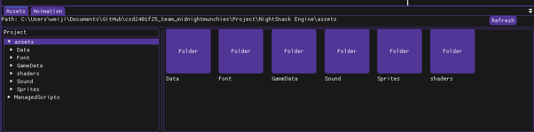
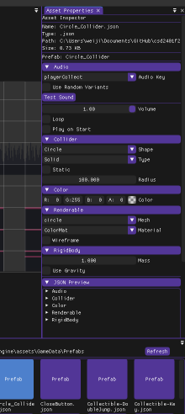
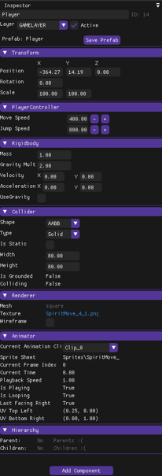
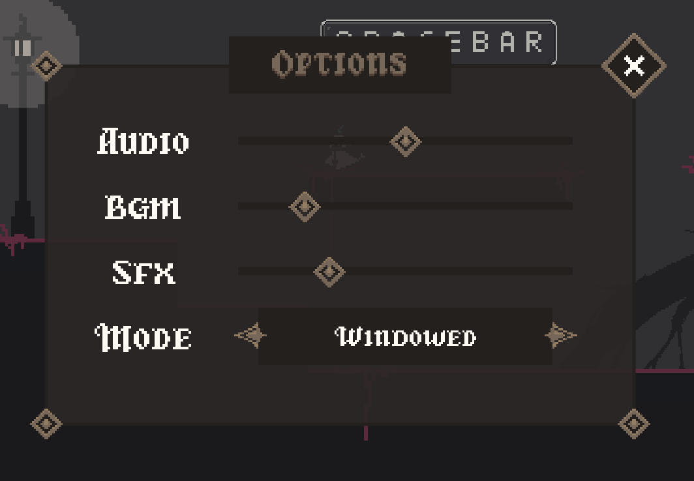

01
Assets & Directory Panel
Designed the ImGui Assets Panel split into a directory listing (left) and interactive preview style (right). Supports navigating folder structures and dragging/dropping asset files directly from Windows Explorer.
GAME ENGINE DEVELOPMENT • AUDIO LEAD / PROGRAMMER • C++
A 2D platformer puzzle game built on a custom-built C++ game engine. Built as part of team Midnight Munchies for a school project.
01 — OVERVIEW
SoulBound is a 2D side-scrolling platform adventure game centered around a unique Possession mechanic. Players control Raincharm, who can possess various enemies and take on their distinct forms and abilities to overcome obstacles and solve puzzles.
Before building the game, our team developed a full custom game engine in C++. As part of the development, I focused on custom editor tooling using ImGui, robust 2D collision detection, custom audio implementation with proximity-based attenuation, and settings UI menus.
Developer
LIM Bryan Jun Jie
Team
Midnight Munchies
Roles
Audio Lead / Programmer
Collision Champion / Audio Champion
Genre
2D Platformer Puzzle
Tech Stack
C++, ImGui, Custom Engine
02 — ENGINE & TOOLING
To power SoulBound, we engineered a custom C++ game engine from scratch. As Collision Champion and Audio Champion, I was heavily involved in physics collision systems, dynamic audio architecture, and creating editor tools using ImGui.
01
Designed the ImGui Assets Panel split into a directory listing (left) and interactive preview style (right). Supports navigating folder structures and dragging/dropping asset files directly from Windows Explorer.
02
Double-clicking items displays metadata (Name, Type, Path, Size) and component controls. Allows developers to modify properties, preview JSON data, save changes back as prefabs, or delete assets.
03
Built the object inspector panel for live modification of Transforms, Rigidbodies, Colliders, and Animators. Implemented solid collision detection to prevent entities from clipping or breaking game physics.

Full ImGui engine editor viewport with Scene hierarchy, Inspector, and Asset directory panels.

Displays full directory structure and preview icons for easy folder navigation.

Shows asset metadata, prefab options, and component property overrides.

Live tweaks for Transform, Controller, Rigidbody, Colliders, and Animators.
03 — AUDIO & SYSTEMS
As the Audio Lead & Audio Champion, I implemented interactive SFX and dynamic sound systems across the entire game:
• Proximity Audio: Dynamically adjusts volume based on player distance when approaching environmental hazards like spikes or falling platforms.
• Character Soundsets: Created distinct audio cues and interaction responses for Raincharm (Ghost), Demonic Frog, Flyeye, and Snek (Snake).
• Settings & Options Menu: Programmed state management for level progression (Levels 1, 2, 3) alongside master/BGM/SFX audio volume controls and window display modes.

In-game Options menu controlling Audio, BGM, SFX volume, and Windowed mode.
04 — GAMEPLAY & MECHANICS
Press Double Spacebar to glide through the air after jumping off platforms.
Jumps higher than Raincharm. Uses a grapple hook (auto-aims stickable walls). Hold Spacebar to attach and swing with W/S.
Passive double jump. Landing on essence restores jumps. Must consume the passive double jump before essence effect takes place.
Slingshot movement. Aim direction with W/A/S/D, adjust launch power via the power panel, and press Spacebar to shoot forward.
Game Controls (PC Keyboard)
• Move: A / D Keys | Up/Down: W / S Keys
• Jump / Ability: Spacebar / Double Spacebar
• Possess / Unpossess: J Key
Developer Cheat Codes
Hold ` + Ctrl along with:
• Possessions: [1] Frog, [2] Flyeye, [3] Snek
• Level Skip: [0] Tutorial, [9] Level 1, [8] Level 2, [7] Level 3
05 — SHOWCASE
Highlighting core mechanics, possession transitions, and level puzzles.
Complete playthrough demonstrating level progression and audio cues.